Ud over de organisatoriske spørgsmål er der en række risici, som ledelsen bør holde sig for øje. Det gælder bias i AI-modellerne, misinformation, øget risiko for snyd og en bekymring for lærernes rolle i klasseværelset (Walden University, u.å.). AI kan blandt andet udfordre lærerens autoritet, fordi teknologien kan fremstå alvidende over for eleverne. Risiciene forsvinder ikke af sig selv, men kræver løbende og systematisk refleksion.
Donald Schön skelner mellem at reflektere midt i en situation, det han kalder reflection-in-action, og at reflektere bagefter, for eksempel sammen med kolleger, det han kalder reflection-on-action (Schön, 2013). Begge dele bør indgå i skolens evalueringspraksis omkring AI.
EU-Kommissionens etiske retningslinjer for undervisere i brugen af AI kan give et supplerende, europæisk perspektiv (Europa-Kommissionen, u.å.). Det kan desuden være nyttigt at se på, hvordan andre kommuner griber det an. KL har samlet erfaringer fra otte kommuner, som kan tjene som spejl for jeres egen praksis (KL, 2025).
Aabenraa Kommunes egen vejledning bygger sit etiske afsnit på fem principper, fire klassiske fra bioetikken udvidet med et femte.
- Godgørenhed betyder, at AI skal gøre noget godt for eleven og fællesskabet.
- Ikke-skade betyder, at værktøjerne skal beskytte data, sikkerhed og elevernes værdighed.
- Autonomi betyder, at AI skal understøtte, men aldrig erstatte, elevens egne valg.
- Retfærdighed handler om lige adgang og fordeling for alle elever.
- Gennemskuelighed betyder, at en AI-models beslutninger skal kunne forklares og efterprøves.
Tilsammen giver principperne et sprog for digital dannelse, der rækker videre end blot at opfordre til at være kritisk (Strümke, 2023; Conrath, 2026).
- Conrath, M. (2026). AI i skolen: Aabenraa Kommunes rejse med generativ AI i undervisningen. Oplæg på Sorø-mødet, 6.-7. august 2026.
- Europa-Kommissionen (u.å.). Ethical guidelines for educators on using AI. https://education.ec.europa.eu/da/focus-topics/digital-education/action-plan/ethical-guidelines-for-educators-on-using-ai
- KL (2025). AI i klasselokalet. Se, hvordan otte kommuner griber det an. https://www.kl.dk/videncenter/nyheder/2025/ai-i-klasselokalet-se-hvordan-otte-kommuner-griber-det-an
- Schön, D. A. (2013). Uddannelse af den reflekterende praktiker. Århus: Klim.
- Strümke, I. (2023). Maskiner der tænker. Algoritmernes hemmeligheder og veje til kunstig intelligens. Politikens Forlag.
- Walden University (u.å.). 5 pros and cons of AI in the education sector. https://www.waldenu.edu/programs/education/resource/five-pros-and-cons-of-ai-in-the-education-sector